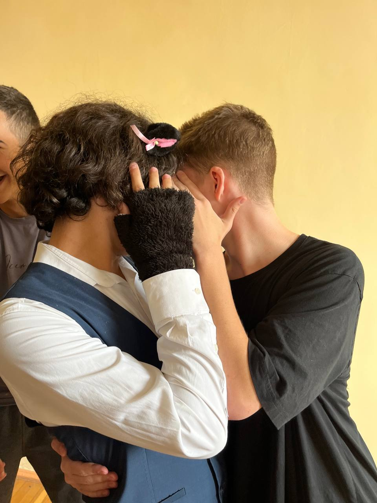
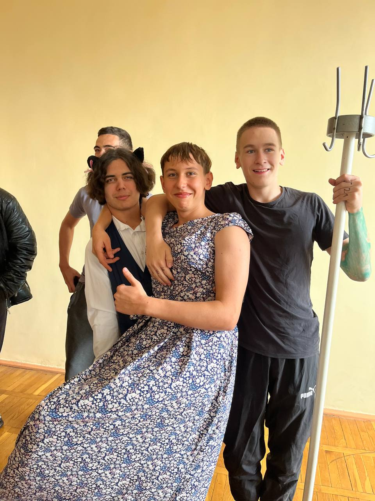
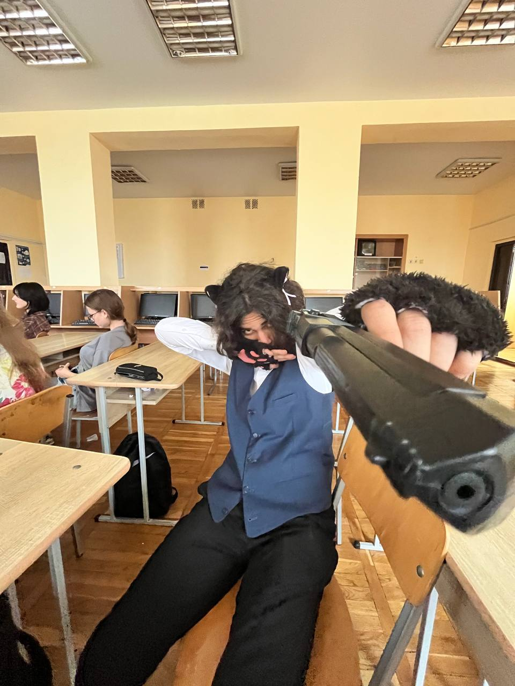
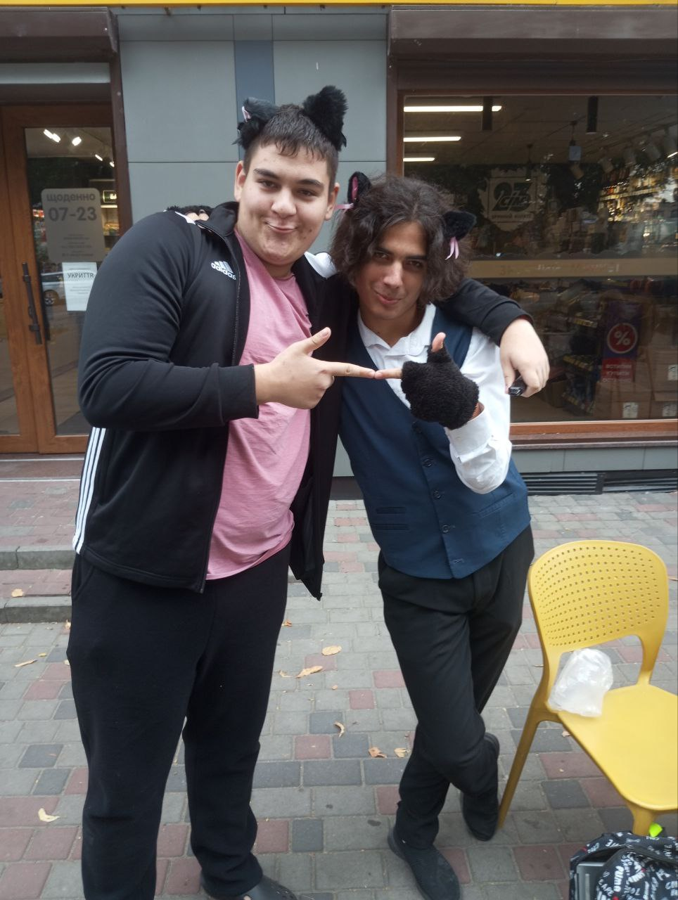

Квадробіка («квадро» — чотири + «аеробіка) — трендовий виток субкультури, що поєднує фізичну активність та імітацію рухів і звуків свійських і диких тварин.
Основне у квадробіці — пересування на чотирьох кінцівках та виконання трюків — стрибки через перешкоди, швидкий біг.
Усе це потребує від квадроберів витривалості, тренування балансу та координації.
Квадробічний рух започаткував японський спринтер Кенічі Іто.
Він ще з дитинства потерпав від булінгу однолітків, які дражнили його «мавпенятком».
Але вирішив не боротися проти прізвиська, а навпаки — максимально підіграти цьому образу й зробити його своєю перевагою.
Він довго вивчав рухи мавп і став автором методики пересування на чотирьох кінцівках.
Авжеж, пан Кенічі Іто за найменшої нагоди відтреновув свої «мавпячі скіли» та навіть ночував кілька днів в ізоляторі після затримання поліцією — його ідентифікували як психічно нестабільну особу.
Квадробіка — це, передусім, спосіб тренування, а не знімкування потенційно вірусних тіктоків.
Цей незвичний спосіб привести тіло в тонус поєднує елементи аеробіки та калістеніки.
І якщо про аеробіку чули всі, то щодо калістеніки є деякі питання.
А це — фізичні вправи на роботу з вагою власного тіла, що зародились ще в Стародавній Греції та мали на меті підготувати воїнів до боїв.
До прикладу — рух на чотирьох кінцівках, що імітують рухи ведмедя. Або вправа, коли людина намагається швидко пересуватись на чотирьох кінцівках і живіт при цьому направлений вгору, — саме такий рух готує бійців до ситуацій, коли вони можуть опинитися на спині і потрібно швидко підвестися із цієї позиції.
Елементи квадробіки вже багато десятиліть використовують у бойових мистецтвах — від змішаних єдиноборств до бразильського джиу-джитсу та капоейри.
Це я такий гарний


Трохи про мій досвід
Хоть я і квадробер я можу знайти спільну мову зі всіма, що не один раз рятувало моє життя, тому якщо хочете стати квадробером, будьте готові спілкуватися з різними людьми
Інколи не виходить подружитися зі всіма, потрібно вміти захистити себе


Хоч нас і мало таких, ми повинні триматися разом, допомагати і підтримувати один одного